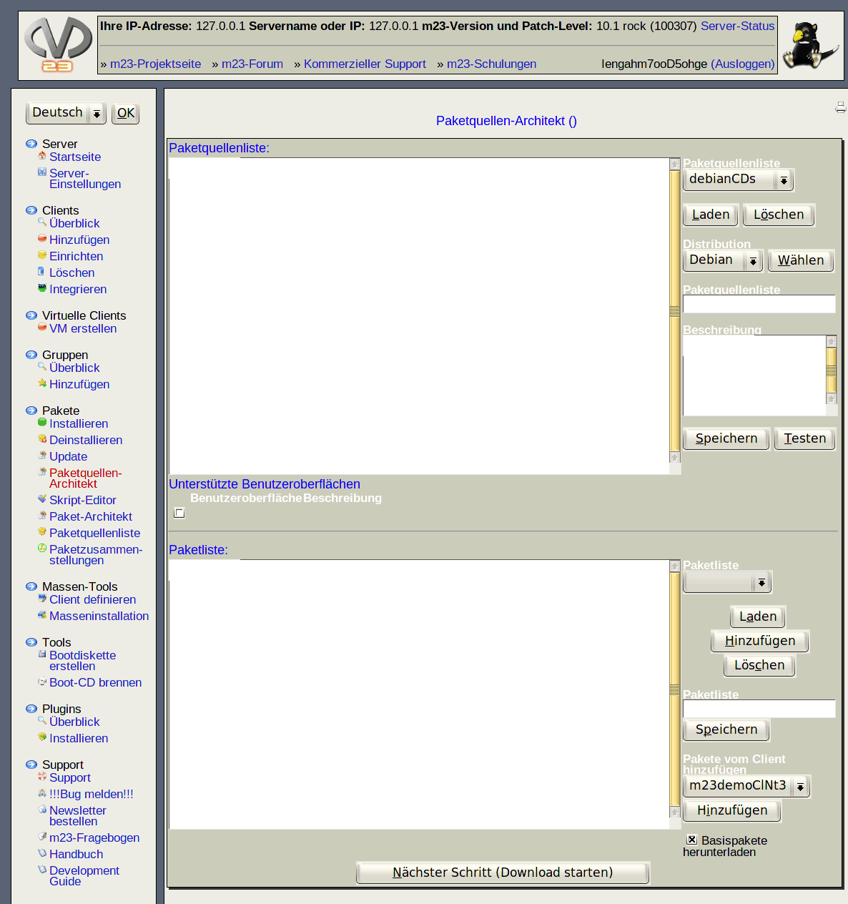

- Medium wählen: Wählen Sie den Mountpunkt aus, von dem Sie die Pakete kopieren wollen und klicken anschließend auf "Laufwerk einlesen".
- Status: Mit einem Klick auf "Laufwerkstatus testen" können Sie den akuellen Status des Laufwerkes und die Größe der Paketquelle feststellen.
- Zusätzliche Medien einlesen: Nach Abschluß des Kopierens können Sie ein neues Medium einlegen und ebenfalls in die Paketquelle kopieren.
- Index erstellen: Fahren Sie mit einem Klick auf "Nächster Schritt (Paket-Index erstellen)" fort, wenn Sie alle Medien kopiert haben.
dodger
2012-11-22